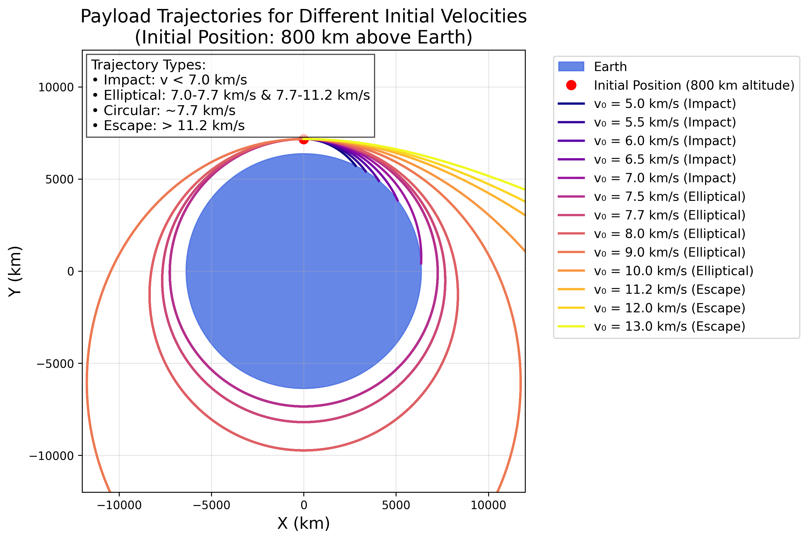
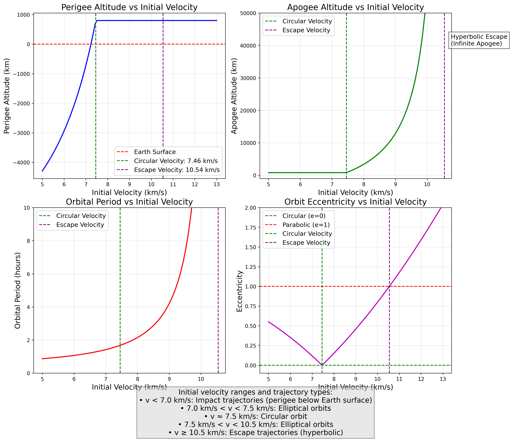
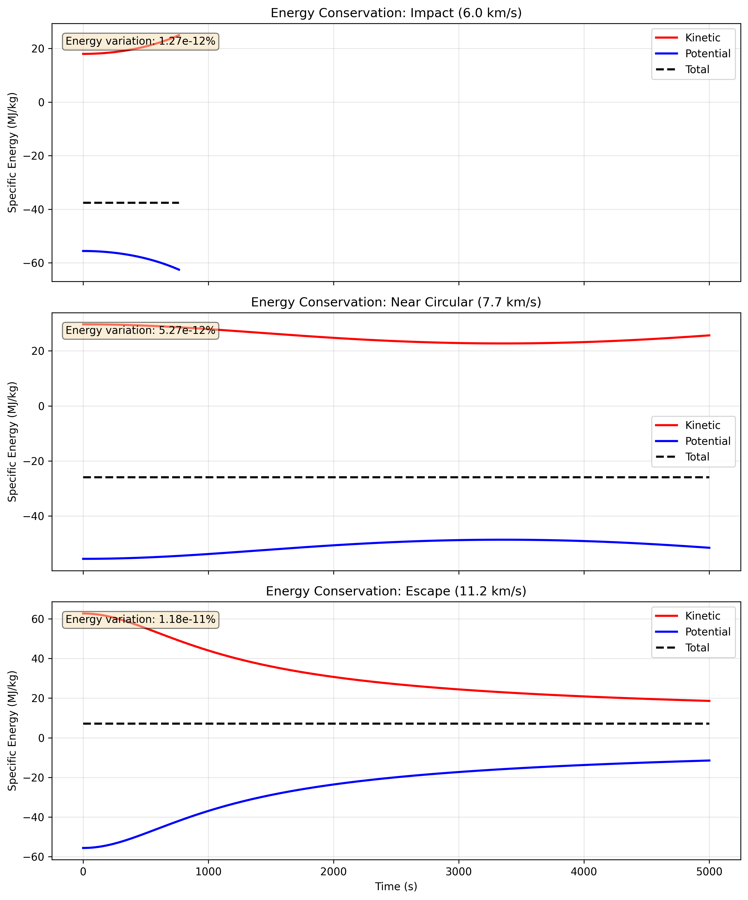

Problem 3: Trajectories of a Freely Released Payload Near Earth
Introduction
When a payload is released from a moving rocket near Earth, its subsequent trajectory is determined by its initial conditions (position and velocity) and Earth's gravitational field. This analysis explores the various possible trajectories, ranging from impact trajectories to escape trajectories, and provides a computational framework for simulating these paths.
Theoretical Background
Orbital Mechanics Fundamentals
The motion of an object near Earth is governed by Newton's law of universal gravitation:
where: - \(G\) is the gravitational constant (\(6.674 \times 10^{-11}\) m³/kg·s²) - \(M\) is Earth's mass (\(5.972 \times 10^{24}\) kg) - \(m\) is the payload mass - \(r\) is the distance from Earth's center - \(\hat{r}\) is the unit vector pointing from Earth's center to the payload
Equations of Motion
The acceleration of the payload is given by:
In Cartesian coordinates, this becomes:
Trajectory Classification
Based on the specific orbital energy \(\epsilon = \frac{v^2}{2} - \frac{GM}{r}\), trajectories can be classified as:
- Elliptical (\(\epsilon < 0\)): Closed orbits, including circular orbits
- Parabolic (\(\epsilon = 0\)): Escape trajectory with minimum energy
- Hyperbolic (\(\epsilon > 0\)): Escape trajectory with excess velocity
Key Velocities
- Circular velocity at altitude \(h\): \(v_c = \sqrt{\frac{GM}{R_E + h}}\)
- Escape velocity at altitude \(h\): \(v_{esc} = \sqrt{\frac{2GM}{R_E + h}}\)
where \(R_E = 6.371 \times 10^6\) m is Earth's radius.
Numerical Analysis
Initial Conditions
For our analysis: - Initial altitude: 800 km above Earth's surface - Initial position: \((0, R_E + 800 \text{ km})\) - Initial velocities: Tangential, ranging from 5.0 to 13.0 km/s - Integration time: Up to 20,000 seconds
Numerical Integration Method
We employ the 4th-order Runge-Kutta method for numerical integration:
def rk4_step(state, t, dt, derivative_func):
k1 = derivative_func(state, t)
k2 = derivative_func(state + 0.5 * dt * k1, t + 0.5 * dt)
k3 = derivative_func(state + 0.5 * dt * k2, t + 0.5 * dt)
k4 = derivative_func(state + dt * k3, t + dt)
return state + (dt / 6) * (k1 + 2*k2 + 2*k3 + k4)
Collision Detection
To ensure physical validity, we check if the payload's distance from Earth's center falls below Earth's radius, indicating a collision.
Results and Visualization
Trajectory Visualization

The figure above shows various payload trajectories for different initial velocities. Key observations:
- Low velocities (5.0-6.5 km/s): Result in impact trajectories
- Intermediate velocities (7.0-7.7 km/s): Produce elliptical orbits
- Near circular velocity (~7.7 km/s): Creates nearly circular orbits
- Above escape velocity (>11.2 km/s): Results in escape trajectories
Orbital Parameters Analysis

This figure displays the variation of key orbital parameters with initial velocity: - Apogee altitude: Maximum distance from Earth's surface - Perigee altitude: Minimum distance from Earth's surface - Orbital period: Time for one complete orbit (for bound orbits) - Eccentricity: Shape parameter of the orbit
Energy Analysis

The figure demonstrates conservation of mechanical energy throughout the trajectories: - Kinetic energy: \(K = \frac{1}{2}mv^2\) - Potential energy: \(U = -\frac{GMm}{r}\) - Total energy: \(E = K + U\) (remains constant)
Interactive Simulation

An animated visualization showing the time evolution of payload trajectories for different initial velocities.
Discussion
Trajectory Types and Applications
- Impact Trajectories (v < 7.0 km/s)
- Relevant for atmospheric reentry missions
-
Requires heat shielding and precise targeting
-
Elliptical Orbits (7.0 km/s < v < 11.2 km/s)
- Used for satellite deployment
-
Orbital parameters depend on initial velocity
-
Escape Trajectories (v > 11.2 km/s)
- Required for interplanetary missions
- Excess velocity determines hyperbolic trajectory shape
Mission Planning Considerations
- Orbital Insertion: Achieving desired orbit requires precise velocity control
- Reentry Scenarios: Must account for atmospheric drag and heating
- Station Keeping: Elliptical orbits require periodic corrections
Computational Considerations
The simulation demonstrates: - Importance of adaptive timestep for accuracy near perigee - Need for collision detection to avoid unphysical solutions - Conservation of energy as validation metric
Implementation Details
The complete Python implementation is provided in scripts/problem3_simulation.py. Key features include:
- ODE Solver: 4th-order Runge-Kutta with adaptive timestep
- Visualization: Multiple plot types for comprehensive analysis
- Animation: Time-evolution visualization of trajectories
- Parameter Study: Systematic variation of initial conditions
Conclusions
This analysis provides a comprehensive framework for understanding payload trajectories near Earth. The computational tool developed allows for:
- Prediction of trajectory type based on initial conditions
- Visualization of orbital paths and parameters
- Analysis of energy conservation and orbital mechanics
- Support for mission planning and trajectory optimization
The results clearly demonstrate the transition from bound orbits to escape trajectories as initial velocity increases, with the critical velocities matching theoretical predictions.
References
- Curtis, H. D. (2014). Orbital Mechanics for Engineering Students (3rd ed.). Butterworth-Heinemann.
- Vallado, D. A. (2013). Fundamentals of Astrodynamics and Applications (4th ed.). Microcosm Press.
- Bate, R. R., Mueller, D. D., & White, J. E. (1971). Fundamentals of Astrodynamics. Dover Publications.